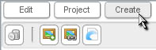
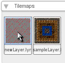
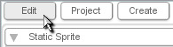
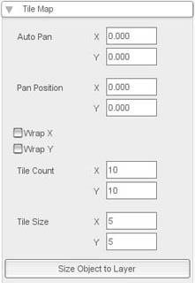
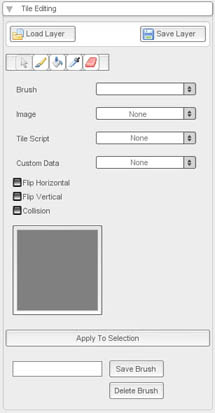

Tilemap Creation
|
To create a new tilemap, go to the Create Tab (as
shown in Figure
1.1.1).
|
 Figure 1.1.1 |
| Next, scroll down to the Tilemaps section. All your saved tilemaps will show up here, as well as the newLayer tilemap on the left. (as shown in Figure 1.1.2). |
 Figure 1.1.2 |
| Now, you can select it and go to the Edit Tab (as shown in Figure 1.1.3). |
 Figure 1.1.3 |
|
The top section will be 'Tile Map' (as shown in Figure 1.1.4). .
Here, you can edit many of the properties of the entire tileMap. The 4
fields at the bottom control the size of each tile and the number of
tiles. When you change them, you'll often want to hit 'Size Object to
Layer', which will make sure all the tiles are showing. |
 Figure 1.1.4 |
| This will open a panel that will allow editing of the individual tiles in the map (as shown in Figure 1.1.3). You can select brushes, script, images, and custom data before drawing on the map with a variety of tools. You can also save your tileMap from here. |
 Figure 1.1.5 |